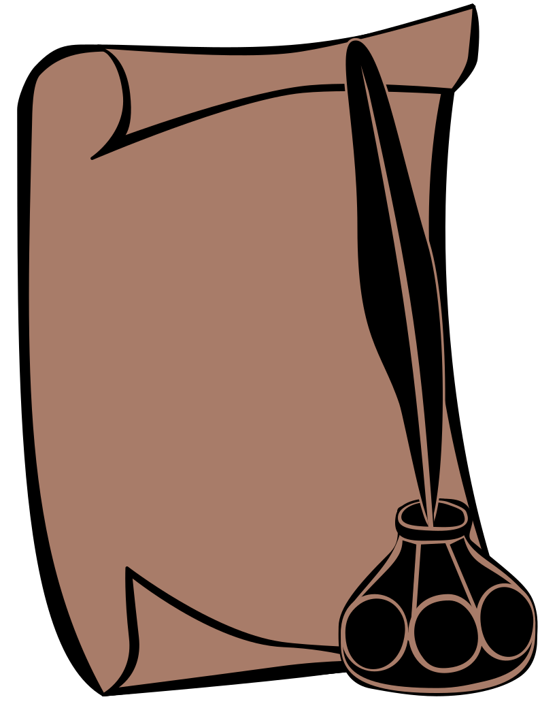

It is more of a complex labyrinth than a library. Upon stepping closer, a sapless scent of well-aged paper arouses the nose of yours.
You walk through unending corridors, built from bookshelves. The dead silence occuring in this room is disrupted by your monotone step.
A serie of novels regarding common, but due to their nature, often defied aspects of once daily life, with a faint addition of fantasy. It is a fruit of my interest with early medieval and late antique history.
Alas, it is not completed yet.
The world we never had a chance to know had already fallen. A remnant of population regrown, reformed the rubble of civilization to new, twisted form.

Alas, it is not completed yet.
About a cultural fragmentation, its potential origin and regional characteristic of it. Shall be taken as a non-scientific document.